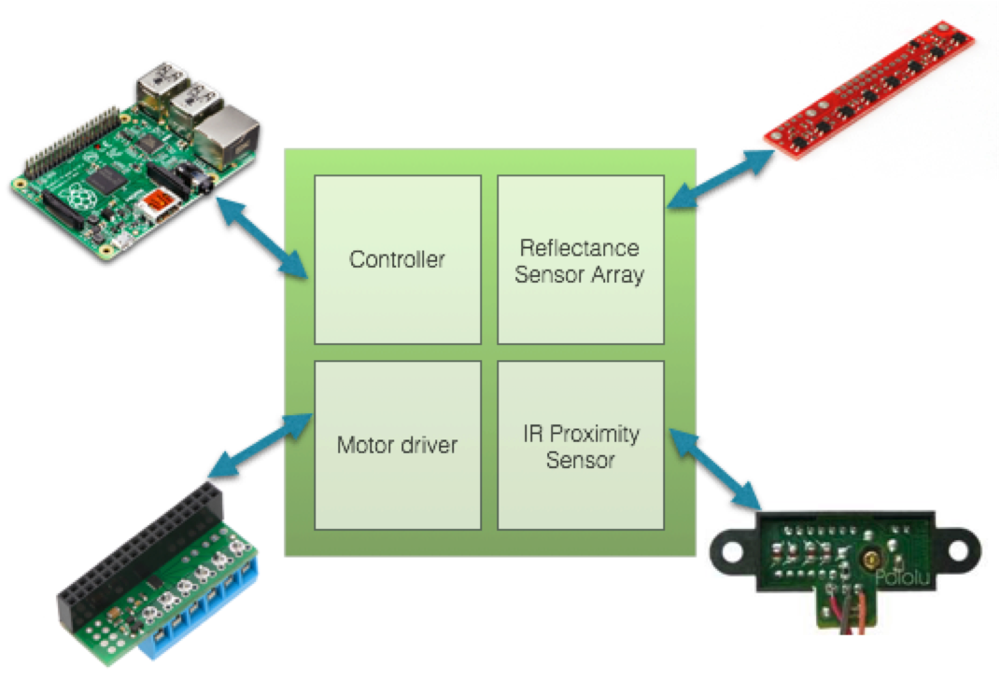
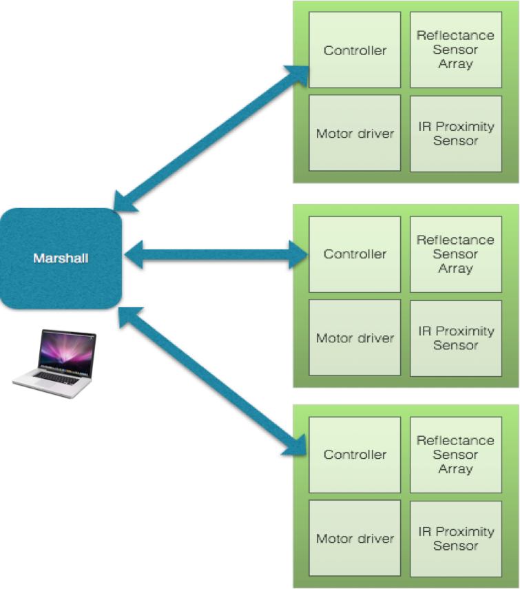
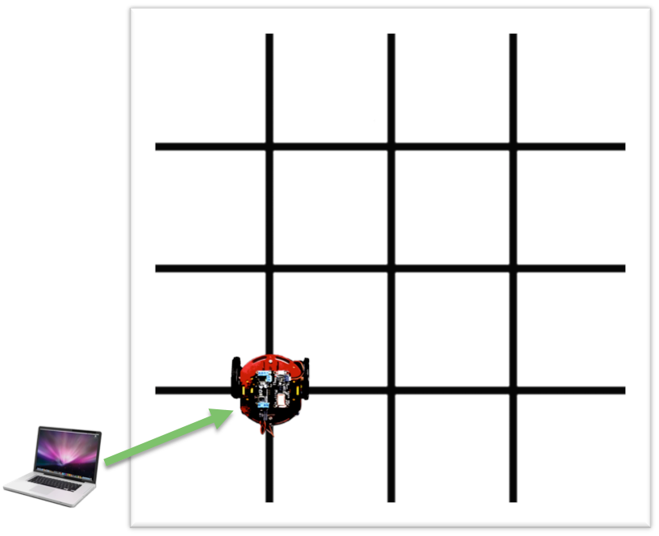

Marshall
A multi-robot coordination project
Marshall is an autonomous V2I protocol, developed for simulating wireless communication between vehicles.
Autonomous driving is one of the most researched and publicised technologies today, which is being pursued by several top-tier companies such as Google, Uber, Tesla and others in the public and private sector. The 5.9 GHz band is currently allocated to the Dedicated Short Range Communications Service (DSRCS) of the Intelligent Transportation Systems (ITS) Radio service, with the goal of incorporating technology and advanced electronics into the nation's surface transportation infrastructure to improve traveler safety, improve air quality, and reduce emissions [1]. 94% of vehicle accidents each year are estimated to be due to human error, so automation in driving could save lives [2]. Some of the biggest new technologies being developed in the 5.9 GHz band are vehicle-to-vehicle (V2V) and vehicle-to-infrastructure (V2I) communication both known collectively as V2X. The DOT estimates that V2X could eliminate up to 80% of crashes per year caused by unimpaired drivers [3]. There are countless opportunities for the improvement of traffic with V2X, including both pollution reduction from better traffic flow patterns, to increased safety from the prevention of accidents. In this project, we aim to design a wireless V2X protocol simulated on a multi-robot setting as a proof of concept of the benefits of V2X technology in traffic patterns.
We would like to simulate autonomous vehicles using miniature robots. This will involve implementation of line following and path planning on a 2D grid. We will also implement a collision avoidance protocol. For our reach goals, the robots will obey traffic rules, including stopping at stoplights, altering routes due to detours, and handling emergency vehicle situations.
Below is our system design
Raspberry Pi 3: Each robot will be controlled with a raspberry pi. Software implemented on the raspberry pi will determine the path that each robot takes to arrive to its destination. The raspberry pis will be powered by a 10000mAh power bank.
Raspberry Pi Motor Driver: The motor driver is for movement control of each robot. The motor driver will be used to control the speed of the robot wheels to go straight and make turns. The motors are powered using a 9V battery.
QTR-8RC Reflectance Sensor Array: The reflectance sensor array will be used for line following purposes. Using the readings from the sensors, the robots will be following a black line on a white surface.
Sharp IR Sensor: These proximity sensors will be used on each robot for backup collision avoidance purposes.

The Marshall will be a laptop and is a central point for communication. The user will be able to input their desired destination on the laptop, which Marshall will send to the node. Marshall will also be receiving location information from each node for collision avoidance purposes. Communication with the nodes will be done via Wi-Fi. For initial connection setup, a node will try to connect to Marshall. Marshall will send back an acknowledgement and a connection will be established.

The test bed will be contructed with white foam-core poster board. Black electrical tape will be used to create a grid of squares with 4-way intersections. The black lines are the roads for the robots, and the contrast between the black lines and white background will be used for line following. At the intersections, robots will be able to either proceed straight or make 90 degree turns. Marshall will send a destination to a node with a known starting location, and the robot will be able to navigate along the grid to its destination.

| Work item | Description | Team members |
|---|---|---|
| Raspberry Pi Setup | Raspberry Pis will be set up so that they will be able to control the robot wheels with the motor driver, interface with sensors, and communicate with one another over Wifi. | Kat & Nandini |
| Robot/Grid Construction and Motor Control | Robots and the gridded path they will follow will be constructed. The robots will also be equipped with a Raspberry Pi 3, a motor driver, and the reflectance sensor array. Software to control the robot wheels using information from the reflective sensor array will be implemented. | Brigitte & Kat |
| Sharp IR Sensors | Sharp IR sensors will be tested and evaluated for their performance with reflective shields made of different materials. These sensors, along with appropriate reflective shields, will be incorporated with the robots so that one robot can determine if it might collide with another robot. | Brigitte |
| Vehicle Communication | Communication tasks for each robot will be implemented. This includes transmitting location information and sensor information through Wi-Fi to the Marshall node. The robots will also be programmed to receive commands from the Marshall node. | Brigitte & Nandini |
| Marshall Communication | Communication tasks for the Marshall node will be implemented. This includes transmitting destination information to the robots and potential collision messages. The Marshall node will also be programmed to receive location and sensor information from the vehicles. | Kat & Nandini |
Brigitte Quirk
Katherine Wang
Nandini Ramakrishnan